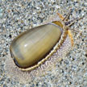
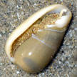
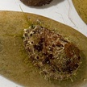

Photo
index of snails on Singapore shores
medium
snails (2-5cm) with oval shells |
|
|
|
|
|
| 2cm.
Shell pear-shaped. Upperside various no spots on both ends. Underside with 'teeth' that are tinged yellow or orang. Rocky
shores and coral rubble. Commonly seen on our Northern shores. |
2-3cm.
Shell cylindrical. Upperside various with 1-2 brown slpots at front end. Underside without coloured 'teeth. Rocky shores
and coral rubble. Commonly seen on our Northern shores. |
About
2cm. Shell is pear-shaped. The underside is pale with small dark 'teeth'.
Rarely seen. |
2.5cm.
Shell pear-shaped, brown blotches at the the top, spots on the base.
Rarely seen. |
2.5cm.
Shell cylindrical, brown blotches at the the top, spots on the base.
Mantle bright orange. Rarely seen. |
|
|
|
|
 Margin snail
Family Marginellidae

|
| 2-2.5cm.
Shell pear-shaped, broad dark bar across the top. Underside with dark spots, shell opening violet with short, tan 'teeth'. Rarely seen. |
2-3cm.
Shell cylindrical, with four large triangular brown spots. Black mantle, underside whith with raised 'teeth' not coloured. On coral
rubble near reefs. Sometimes seen on our Southern shores. |
2.5-3cm.
Shell pear-shaped, beige to light brown with white spots all over
it, broad white margin around the base. Brown mottled 'hairy' mantle, underside white with raised 'teeth' not colouredl. On rocks among sponges, sea fans, on sand among seagrasses.
Commonly seen on our Northern shores, sometimes on our Southern shores. |
3-4cm.
Shell pear-shaped. Upperside brown to orange often with 2-3 bands of gold. Underside dark with orange 'teeth'. Rocky shores and coral rubble usually near sponges and sea fans.
Sometimes seen on our Northern shores. |
2cm.
Shell tear-drop shaped with 'plaits' at the shell opening. Rarely seen. Sandy shores in the north. |
|
|
|
|
|
| About
1cm. Shell white, oval with regular parallel ridges all around including
the upper side. A prominent groove along the length of the upper side,
cutting across the ridges. Rarely seen. |
1.5-2cm.
Shell pear-shaped white. Mantle transparent with irregular brownish
blotches. Found on flowery soft corals especially on our Northern
shores. |
|
2-3cm.
Shell irregular, hexagonal with delicate ring. Rarely seen. |
|
|
|
|
|
|
| 2-3.5cm.
Shell cylindrical, olive-shaped, conical spire. Smooth shiny beige
with dark speckles or blotchy bars. Shell opening purplish brown.
Sand bars and sandy areas. Commonly seen on many of our shores. |
2-4.5cm.
Shell cylindrical, olive-shaped, conical spire. Smooth shiny with
a wide range of patterns. Shell opening pinkish. Silty sand near seagrasses.
Seldom seen. |
2-3.5cm.
Shell cylindrical, olive-shaped, conical spire. Smooth shiny beige
with darj speckles or blotchy bars. Shell opening purplish brown.
Silty sand near seagrasses. Sometimes seen on our Northern shores. |
4-5cm.
Shell cylindrical, olive-shaped, flattened spire with short tip. Smooth
shiny with zig-zag pattern and broad dark spiral. Orange coloured
shell opening. Sometimes seen on some Southern shores. |
|

Abalone
Family Haliotidae |
|
|
|
|
4-7cm.
Shell flat ear-like with a spiral of 5-10 small holes. Rocky and rubbly
reefs. Sometimes seen on our northern shores.
|
2-3cm.
Shell cylindrical, olive-shaped, with fine ridges. Sand among seagrasses.
Seen on Changi. |
|
|
5-10cm.
Shell heavy, conical like an ice-cream cone. But some have pointed
tips or are olive-shaped. Shell opening a narrow slit. Reefs, rocky
shores. Live ones rarely seen. HIGHLY
DANGEROUS. Do
not handle. |
|
|
|
|
|
| 2-3cm.
Shell shaped like a teardrop with a small shell opening with a flared
edge. On mangrove leaves and trunks. Sometimes seen in our mangroves. |
2.5-4cm.
Shell thick oval, plain dark with a white rim and white mouth. On
mangrove trees. Sometimes seen in our mangroves. |
2-3cm.
Shell thick oval, brown spiralling bands and pinkish violet mouth.
On mangrove trees. Sometimes seen in our mangroves. |
|
|
|
photo
index of
molluscs on this site
|
|